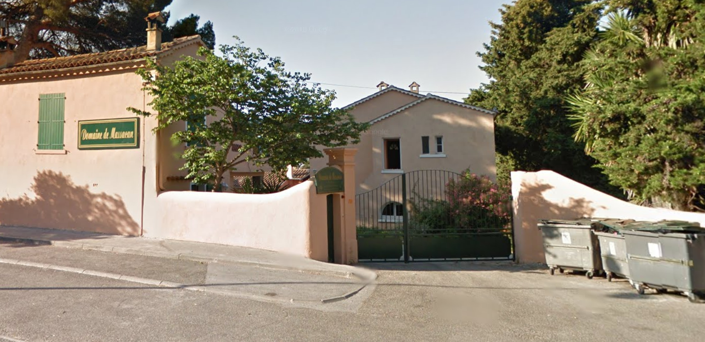

Ces informations sont régulièrement mises à jour, revenez sur cette page et n'hésitez pas à nous contacter pour toute précision.
En dehors des familles et des gens en couple, vous serez logés dans des chambres de 2 à 4 personnes.
Le couchage est fourni, pas le linge de toilette
Les animaux ne sont pas admis
Un grand parc avec accès direct à la mer est à votre disposition.
Les repas sont fournis pendant votre séjour et inclus dans le prix du billet.
Si vous souffrez d'allergies ou de restriction alimentaires, prévenez-nous.
Vous pouvez rejoindre Toulon par train ou en voiture. L'aéroport de Hyères dispose également de navettes pour rejoindre la gare de Toulon.
Depuis la gare, empruntez le bus jusqu'à l'arrêt de bus indiqué plus bas. Le domaine qui est aisément identifiable, est à 200 m de cet arrêt.

Deux lignes sont appropriées et fonctionnenet de ~6H00 à ~20H00:
Assez facile d'accès, le domaine dispose d'un parking privé suffisament grand. Pour votre GPS, il est situé au 1589 Avenue Commandant Houot, 83130 La Garde
Un petit footing sera organisé dimanche matin, prenenez vos baskets si vous souhaitez participer.
Les températures sont variables en avril, et peuvent nécessiter tshirts ou pull, particulièrement à cause du Mistral. Consultez la météo et équipez-vous en conséquence.
C'est indiqué plus haut, mais emportez une serviette de toilette, elle n'est pas fournie (même si vous n'êtes pas un voyageur galactique).
Nous ne garantissons pas un wifi très performant, en revanche la 3/4 G devrait passer sans problème.